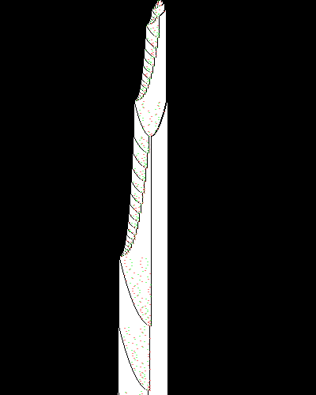

All About Space Needle
September 1 2025
Few turing machines have captured my interest quite like this one.
Turns out, it's pretty hard! I think at least.
After examining it on and off for over a month, I am ready to now admit defeat. This blog post will serve as a compilation of everything I have learned about this machine, in hopes that one day someone will be able to follow in my footsteps and find a way to finally prove whether it halts once and for all.
Basic Rules
| State | 0 | 1 |
|---|---|---|
| A | 1RB | 1LA |
| B | 1LC | 0RE |
| C | 1LF | 1LD |
| D | 0RB | 0LA |
| E | 1RC | 1RE |
| F | HALT | 0LD |
The above table represents the transition table, or what the machine does at the absolute lowest level. However, staring at this won't get us very far. If you're anything like me, you want something mathy to work with.
The initial rules discovered by mxdys look like the following:
These rules look scary. It has two variables that seem to depend on each other in a nontrivial way, similar to BMO1 which remains unsolved. However, we can simplify this in a way that completely eliminates the second variable.
Which yields following problem:
Now consider the iterated application of the function . Does there exist an such that is a power of 2?
The proof that these two statements are equivalent isn't exactly trivial, but it isn't that interesting. It's just a proof by induction and a lot of algebra. I've rewritten my proof below for those curious.
PROOF:
the key is to notice that whenever b is even, c gets mapped to 1. Thus it's possible to rewrite the rules to map between each directly and eliminate the need to have a c variable.
LEMMA 1:
Let Then
PROOF OF LEMMA 1:
BASE CASE: Thus the base case holds
INDUCTIVE STEP:
Let
Then
Thus for all n and b via induction
QED
When equals the number of times that can be divided by 2, this gives us the value of b in the last iteration before applying the even b rule. However, now we need to derive the rule for what happens to c. It's clear that where , as this follows from the original definition. So to get a clear formula for c, we just need to wrangle that S term.
Now we can apply the geometric series formula:
where in our case,
and
Therefore:
And
Therefore
From here, you just apply the once. Which is... an algebraic nightmare, so will be left as an exercise to the reader.
Thus we've completely eliminated the need for , yielding a direct formula from each :
Where is the largest power of 2 dividing b, and the sequence halts upon hitting a value 3 less than a power of 2.
That "+3"-ness is quite ugly though. If we shift by as well as the halting problem and starting condition we get an alternate, much cleaner but equivalent formulation:
Which we can express as the desired problem.
QED
The fundamental sequence
The halting problem of this machine, put another way, is about whether two sequences ever collide. Starting at 6, we can generate the successive values of the machine's sequence.
Something interesting to note, it's actually possible to extend this sequence backwards two steps. 2 maps to 3 which maps to 6 which continues on to our original sequence. Space Needle works with a slightly modified formulation where b and the halting problem is shifted by -3 (see proof). So you could interpret the machine as starting at 3, (with no ones on the tape) and avoiding 2 because it isn't representable on the tape.
So maybe reformulating the problem for the specific sequence as "can a power of 2 other than 1 ever map to another power of 2" could yield some results, although I was unable to find a way to use it.
The growth rate of this sequence can be trivially bounded from above by . This comes from the fact that the most a term can grow in one step is the zero multiples of 2 case, in which repeatedly applying yields that growth rate.
A lower bound is harder to derive. I was able to at one point derive a very loose lower bound of . This comes from looking at the minimum growth rate across two applications of the function. If a number in the sequence is highly divisible by 2, after the application of the function it will grow by a small amount and thus no longer be highly divisible by 2. This forces the next iteration to grow faster than the first.
I have lost the notes of my proof for this, unfortunately. So feel free to take it with a grain of salt. Although with how loose of a lower bound this is I would be surprised if it's wrong.
LegionMammal was able to find the average growth rate of the function, characterized as plus a random walk on the log-scale. This comes from examining the expected drift rate after taking the logarithm since it can be interpreted as a pseudo-random walk, which is . This yields which when exponentiated back gives that growth rate.
Because the adherance to the growth rate isn't necessarily very strict, it doesn't seem to be possible to apply Baker's Theorem in the same way that is used to show that the distance between any two and get larger as a and b sufficiently increase.
Brute force computation
I have personally simulated out the sequence to 17 million terms, after which the terms exceed . The most factors of 2 any term had in the sequence was 24.
Andrew Ducharme also simulated out the sequence pretty far, and kept track of the drift from the powers of 2 above and below each term. This revealed a clear trend, that each successive term in the sequence appears to get further and further from halting.
In the above graph, blue dots represent b_t, yellow is the distance from the closest power of 2 below b_t, and green is distance from closest power of 2 above b_t
Backwards Reasoning Approach
Simulating it forward doesn't seem to yield much. So what if we worked *backwards* from the powers of 2 to see what numbers can reach them?
We can show the following relation to be true:
Observe that in the formula for the mapping: . So if we want an arbitrary number to be reachable from below by a fixed , it has to satisfy the equation For some a. So if we solve for we get: Thus for this to be an integer, we have
QED
Since this formula works for any value, we can use e = 2^n to find every sequence that halts. And the best part is we can apply it as many times as we want to find any halting sequence we desire. As we extend the formula backwards to find longer and longer chains, this places more restrictions on what can be.
For a simple example, let's find all 2^n that are reachable by an odd number. We set k = 0 and e = 2^n to get . This equation is satisfiable whenever n = 4t for integers t. Then we can plug back in to get our desired result:
Plugging in yields the trivial solution , but for t = 1 we get our first nontrivial solution .
Here are some other values:
However, the real fun part is we can continue this backwards as much as we want, substituting our new into the formula to work backwards 2 steps, then 3, and so on.
If we start with , to find when it is reachable by a given k, do the following:
Update and accordingly. If unsatisfiable, stop.
Step 2 - Solve for . This yields: Solving for to set up for the next step we get Now let your next , and . You're now ready for the next iteration, and you can repeat as many times as you'd like.
For example, I can prove without actually checking that maps to a power of 2 in 3 steps because I derived it using the process above.
So close, yet so far
With some brute force, I computed the families of all reachable powers of two in 6 steps that don't use a number with more than four factors of two. As said earlier, adding more backwards steps adds more restrictions onto what powers of two are reachable. This causes the powers of two you have to go out to to grow extremely quickly. I believe the smallest value that reaches a power of two within 6 steps is . But even this is an outliar, most sequences have a smallest member whose power of two is raised to the thousands
A path to proving nonhalting for our sequence would be as follows. We know our sequence is bounded from above by 2.5^n. If we can prove that for a sequence of k steps, the minimum power of 2 reachable in that many steps is some sufficient lower bound like , this would let us prove our sequence starting from 6 never halts via induction. Informally, our sequence would get longer and longer but the distance it would have to travel to reach a power of 2 would provably grow faster than it could keep up with.
I tried, a lot, to come up with such a proof. Alas, I return empty-handed. Which is made all the more unfortunate by the fact that it is almost doable. For example, if you showed within two steps (outside of some trivial cases) you encounter a point where has to be greater than 0 to satisfy the formula in step 1, that would let you place a strong enough bound to construct the inductive proof.
The problem is that the c term in is very hard to characterize, meaning when we find the modulus it's near impossible to put a bound on when the formula is satisfiable. It just seems really hard to find a way to rule out the existence of some insane conspiracy among all the numbers to make a specific power of 2 reachable by a huge number of steps.
A "Probviousness" Argument
I do want to at least leave you with my argument for why I think it is easy to say this machine is probviously nonhalting, based on the previous section.
Using the algorithm above, having a value with a small starting value reach a power of 2 after some obscene number of steps would require consistently in a row for millions/billions/whatever iterations. This, obviously, seems like it should never happen given that m and c grow very differently. It would be quite surprising to believe that they can line up for an arbitrarily long time.
I don't know how to get the exact chance of this occuring, maybe using the euler totient function? If you have an idea, let me know.